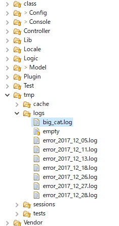

$this->log('test'); // 出力先ファイル→ /app/tmp/logs/error.log
$this->log('test',LOG_DEBUG); // 出力先ファイル→ /app/tmp/logs/debug.log
define('BIG_CAT', 'big_cat');
CakeLog::config('big_cat', array(
'engine' => 'FileLog',
'types' => array('big_cat'),
'file' => 'big_cat',
));
$this->log('test=neko',BIG_CAT);
自動生成された独自のlogファイル
